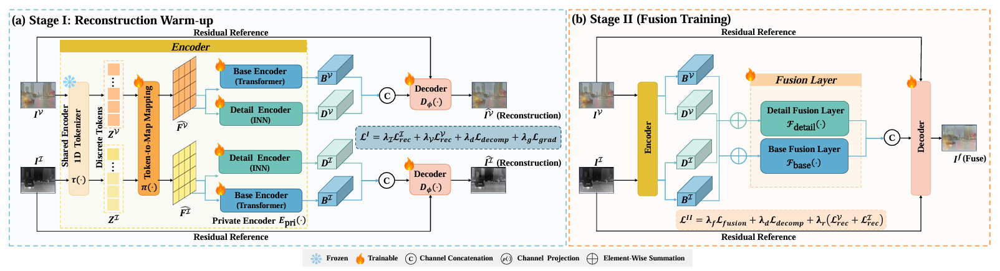
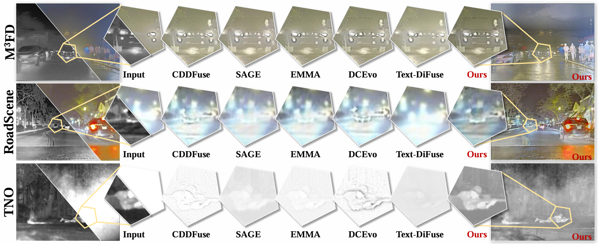
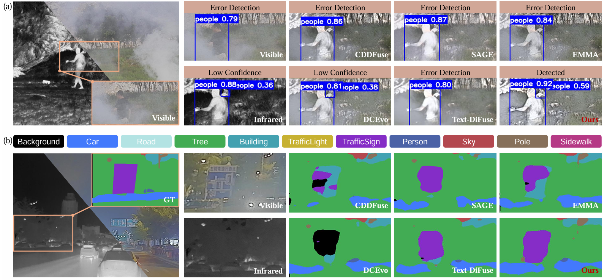

From 2D Grids to 1D Tokens:
Reforming Shared Representations for Multimodal Image Fusion
Abstract
Multimodal image fusion (MMIF) aims to integrate complementary information from different modalities into a single fused image that preserves fine local details while maintaining globally consistent appearance. Most existing approaches build shared representations on 2D feature grids, which excel at modeling local structures but offer limited leverage over image-level appearance factors. To better optimize two objectives jointly, we redesign the shared representation by mapping inputs into a compact sequence of discrete 1D image tokens, and instantiate this design with TiTok as a lightweight tokenizer, decoupling the shared representation from fixed pixel locations and concentrating image-level attributes into a small set of global tokens.
We propose Selective Token Editing (STE): we sparsely update only a small set of critical shared tokens, providing a lightweight token-level mechanism to steer global appearance coherence while keeping the fusion backbone unchanged and avoiding complex loss designs. Experiments on multiple benchmarks show that our method delivers consistent, multi-metric improvements—enhancing global coherence and local fidelity simultaneously—and achieves the best overall performance under comprehensive evaluation.
Method Overview

Experiments
We evaluate on two multimodal image fusion tasks and two downstream perception tasks:
- Infrared-Visible Image Fusion (IVIF): Trained on MSRS (1,083 pairs); tested on M3FD (202 pairs), RoadScene (152 pairs), and TNO (30 pairs).
- Medical Image Fusion (MIF): Evaluated on the Harvard Medical dataset.
- Downstream tasks: Object detection on M3FD and semantic segmentation on FMB.
We compare against 9 state-of-the-art methods including CDDFuse, DDFM, LRRNet, Text-IF, TC-MoA, EMMA, and SAGE. Our method achieves the best overall performance under comprehensive multi-metric evaluation, delivering consistent improvements in global coherence and local fidelity simultaneously.


BibTeX
@inproceedings{xian2026_1dtokens,
title = {From 2D Grids to 1D Tokens: Reforming Shared Representations for Multimodal Image Fusion},
author = {Xian, Yuchen and Xu, Yunqiu and He, Yang and Yang, Yi},
booktitle = {Proceedings of the 43rd International Conference on Machine Learning},
year = {2026}
}